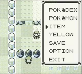

Valid source map Glitch City
This article is a summary page for different variations of a glitches, etc. when talked about as a whole.
|
| PRAMA Initiative a également une page sur Valid source map Glitch City. |
| Bulbapedia also has an article about Valid source map Glitch City. |
A valid source map Glitch City is a type of Glitch City in Pokémon Red, Blue, and Yellow in which a Glitch City is loaded from an existing map but with an invalid map block source pointer, and the most well-known type of Glitch City in the English Pokémon glitch community.
Contents
Traits
Valid source map Glitch Cities are not unique locations, but rather a temporarily corrupted version of an existing map.
This can be proven by viewing the memory address D35E (D35D) in Yellow, and looking up the value here. Additionally, when a player checks the Town Map while in a Glitch City, the map says that they are in the source map.
Also, attributes of the source map are preserved. A Cycling Road Glitch City forces the player to move downward, in the same manner that the Cycling Road itself does. The tileset of the map is the same as the source map. The sizes of the map are preserved as well.
Wild Pokemon are also preserved; if the source map had wild Pokémon data, then those Pokemon will appear when Surfing in Glitch City. If the Glitch City had a 'left-facing strait tile', it is possible to perform the left-facing shore tile glitch with it. This is possible with the Sea Route 19 Glitch City. Missingno. and other Pokémon can be made to appear in a Glitch City via the old man trick.
A number of interesting changes are made to the map when it is corrupted. Some of these are relatively obvious, while others are more subtle.
- All terrain in the map is corrupted beyond recognition.
- Warps and objects are ignored and do not appear in Glitch Cities. This is why doors, signs, and cave entrances do nothing when they appear in Glitch Cities, and why people never appear in Glitch Cities.
- Objects are anything on the overworld that takes up space and can be interacted with using the A button. People and cuttable trees are objects. There are also invisible objects that are placed over signposts -- signs, like doors, don't do anything on their own.
Map links and glitched coordinates
Map links still exist in Glitch Cities, but going from one map to another will not fix the Glitch City. The player's coordinates on a Glitch City may be glitched.
In Pokémon Red and Blue, Sea Route 20's Glitch City takes the player to coordinates of y=107 (hex:6B) and x=107, while the highest valid coordinates for that route are y=17 (hex:11) and x=99 (hex:63).
Basically, this means that initially going west too much counts as taking the player to the east connection hex:64 (Sea Route 19) and going right too much counts as taking the player to the west connection hex:FF (Cinnabar Island), but when a connection happens the player's coordinates are updated like normal (e.g. going to the hex:64 connection makes the player's new x coordinate 00 because this is the minimum x coordinate for Sea Route 19). As FF is a west connection to get to Sea Route 20, going one more step west takes the player back to Sea Route 20, due to the byte 'underflow' from 00 to FF.
Through wrong warps
A wrong warp Glitch City is a Glitch City that was accessed from a valid exit destination (stored in D365/4) but with an invalid displacement ID.
A displacement ID is an ID that tells the game which coordinates to place the player and where data for the blocks on the screen can be found in the ROM.
In the Safari Zone exit glitch, exiting the Safari Zone gate loads the displacement ID hex:04. While this is a valid destination for Fuchsia City (placing the player outside of the Safari Zone building's door), it is not a valid destination for many other maps such as Pallet Town.
Unfortunately the value of D365 does not update in buildings, meaning many building/dungeon Glitch Cities cannot be accessed through the Safari Zone exit glitch.
However, normally unavailable wrong warp Glitch Cities such as Red's house Glitch City can be accessed by modifying the value of item 36's quantity in the expanded items pack.
Another way to access them is through the 99 item stack glitch exploited from the Yami Shop glitch.
Examples of specific Glitch Cities
These are specific Glitch Cities accessible through the Safari Zone exit glitch.
Glitch City (Be recalled in: Sea Route 20) Glitch City is fairly navigable compared to other 'regions'. Do not try to cut down any trees or enter any caves - trees regenerate, and caves do not work. Entering the nearest one causes you to get trapped.
Glitch Mountain (Be recalled in: Cycling Road) Glitch Mountain is also fairly navigable. Like in Cycling Road, your character is constantly moving downhill. Because of this, you cannot Surf on any of the blocks of water.
Glitch League (Be recalled in: Indigo Plateau or Route 23) Glitch League is not as easily navigable as Glitch City or Glitch Mountain. You can only move around a very small area, but you can see pieces of statues, water, and all kinds of other stuff.
Through stepping out of bounds
An out of bounds Glitch City in Pokémon Red, Blue, and Yellow is a type of Glitch City that appears when the y coordinate of a map is a certain value higher than its y boundary. It is not to be confused with a Generation II out of bounds Glitch City.
It can be contrasted with a Phantom City; which is a copy of a map that appears for excessively high x positions greater than the x boundary.
The required y coordinate for an out of bounds Glitch City may vary[clarification needed].
Like Glitch Cities accessed from a wrong warp, they are typically sourced from an existing map but with an invalid map block source pointer.
See also: Glitch City RAM manipulation (Cut abuse) for limited RAM manipulation or Glitch City RAM manipulation (buffer overflow techniques) for crafted Glitch Cities for buffer overflow techniques (e.g. LOL glitch for a specific Pokémon).
Accessing an out of bounds Glitch City
- Use a free travel walk through walls glitch.
- Go to either the north-west most or north-east most corner of a map (where y=00), then walk west or east. Alternatively, the glitch may work when y ranges between 01-06, with 06 placing you at position FE, 05 placing you at position FD, etc. The map you set up the glitch from must have a real east or west connection.
- The y coordinate will be corrupted. Keep walking up to see a Glitch City.
Through manual editing of D35F-D360
These Glitch Cities (also known as "instant Glitch Cities") were researched by luckytyphlosion.
By modifying the quantity of item 33 and the identifier of item 34 in the expanded items pack, the player can create a Glitch City that is seen from the start menu after the Trainer card is viewed but not when the start menu is closed.
Regardless, they can still be used for buffer overflow techniques, such as specific CoolTrainer♀-type move or Super Glitch corruptions and notably oobLG in a map with a PC.
Although usually these are not displayed when the start menu is closed, the map can be applied when the start menu is closed through the use of the 9F glitch item in Yellow or a custom map script/arbitrary code execution in Red and Blue. One way to do it in Red and Blue is to place an X Attack x18 into item 41.
Through a 10F Glitch City
In Pokémon Red and Blue but not Pokémon Yellow, using the glitch item 10F may alter the map's block source pointer to WRAM D62E (in Route 1), or another location; depending on the original map.
Through an invalid D056 Glitch City
In Pokémon Yellow but not Pokémon Red and Blue, if the value of D056 in 03 or greater then throwing a Poké Ball will cause a glitchy animation to occur and then create with a map block pointer sourced from a location such as 0x1A08 (Route 1) or WRAM 0xC74B (Victory Road map 0xC2; where the exit to Pokémon League is).
The Glitch City may only be seen when the menu is opened (although the map permissions are still applied) and parts of the Glitch City may be seen while walking around. Furthermore, in the Victory Road map the Glitch City can only be seen one time when opening the menu immediately after throwing the ball.
Repeated use of the Poké Ball after activating the Glitch City may cause the game to freeze after opening the inventory.
In order to obtain an invalid D056 value and throw the Poké Ball, go to a specific location with a 0x50 sub-tile such as the location below, put an unterminated name glitch item in slot 2 and a Poké Ball in slot 1 of the inventory, scroll up to top of the items pack, select the unterminated name glitch item but exit with B to automatically throw the Poké Ball in slot 1 and activate the Glitch City.

Through a Silph Co. PC glitch
The Silph Co. PC Glitch City in at least Pokémon Red and Blue that was documented by Raven Freak. It allows the player to enter a Glitch City-like realm where it is difficult to move around, when possible.
Procedure
- Cause the Hall of Fame to become glitched by viewing the status of another glitch Pokémon such as 'M (00).
- Go to the last floor of the Silph Co., and check the PC.
- Check the Hall of Fame, exit, and log out.
The surrounding area will now become a mass of glitchy tiles.
Note this does not always work for unknown reasons.
See also
- Glitch City RAM manipulation: When a Glitch City's block source pointer is in a location in RAM, it allows for the player to set up a specific Glitch City from buffer overflow techniques that use the screen data or cut a tree to modify a specific address in RAM to a value based on the original 4x4 map block.